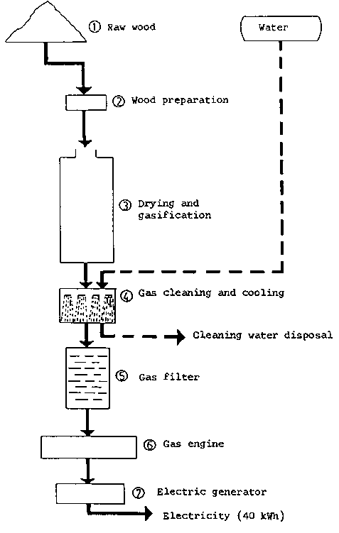
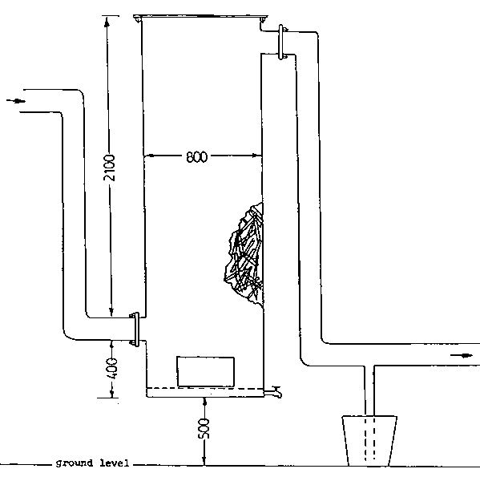

4.1.1 Fuel supply
4.1.2 The wood gasifier
4.1.3 Wood gas cooling and washing installations
4.1.4 Wood gas filter
4.1.5 Engine and electric generator
Figure 4.1 shows a schematic flow diagram for the electricity generation process. A more detailed flow diagram for the gasifier system is shown in Figure 4.2
Table 4.1 summarizes technical data for the plant.
Table 4.1 Technical data of downdraught wood gasifier power plant at the Sapire sawmill
|
Electric generator capacity |
40 kW |
|
Engine power |
90 HP |
|
Electric generator work hours per day |
14 |
|
Daily power consumption of sawmill |
463 kWh |
|
Waste wood consumption per kWh |
4.1 kg |
|
Maximum waste wood moisture content |
37% (dry) |
The sawmill is located in a forest area with abundant wood. The roads in this area are unpaved so the sawmill keeps stocks in a log yard to maintain the supply of raw material during rainy periods.
The wood supply for the gasifier is completely covered since it comes from the sawmill wastes. On average, these wastes amount to 35% of the log input, a quantity exceeding the needs of the wood gasifier (about 570 t/year). There is thus no need to economize on the fuel and in fact as much as possible is used so as to reduce the area needed for storage.
Table 4.2 shows the wood species used as gasifier fuel and the bulk densities of the corresponding wood chips.
Figure 4.1 Flow diagram for the gasifier system of the power plant at the Sapire sawmill.

Table 4.2 Wood chips utilized for the gas producer
|
Name of Wood |
| |
|
Common Name |
Botanical Name |
Bulk density (kg/m ) |
|
Palo Rosa |
Aspidosperma peroba |
861 |
|
Peteriby |
Cordia mellea |
543 |
|
Lapacho |
Tecoma ipe |
993 |
|
Cedar |
Cedrella fissilis |
554 |
|
Guacá |
Ocotea puberula |
448 |
|
Guatambu |
Aspidosperma Austr. |
883 |
The maximum dimensions of the wood fuel are 40 x 40 x 5 cm, i.e. the largest that can be fed into the loading chute of the gasifier, and smaller pieces, down to the size of a matchbox, are all accepted. In theory, about ten percent of shavings and sawdust can be included, but in practice this has produced poor results because the sawmill has an earth floor and dust tends to be swept up with the wood waste.
The maximum moisture content recorded was 37 percent, decreasing with size and the length of time the logs are stored before conversion. The moisture content therefore varies with sawmill operations and the seasons.
Variations of wood moisture content below the maximum do not affect the quality of fuel gas because the feedstock dries in the bunker section of the gasifier before-it reaches the pyrolysis zone.
The wood gas generator consists of a unit with sheet iron walls 6 mm thick lined on the inside with bricks having 50 percent alumina (AL2O3) content. It has a total height of 3600 mm and its external diameter is 1400 mm. The fuel (wood) loading chute has a diameter of 400 mm. The reactor has cast iron grates installed 300 mm from the bottom. These grates are set 20 mm apart and have a lever movement system for removing ashes. Under the grates, 150 mm from the base, is a water cooling system with a three-fold function as follows:
1. Hydraulically closing off the area where the ashes fall out to prevent the combustible gas from leaking.
2. Cooling the grate and lever area.
3. Draining off the ashes with water.
Figure 4.2 Sketch of the wood gasifier at the Sapire sawmill
The gasifier has eight two-inch diameter air entrance openings. Four of these are separated at equal intervals of 1800 mm from the bottom. The remaining four are separated in the same way but at 1320 mm from the bottom (see Figure 4.2).
The gasifier, being moderately large, is able to accept pieces of wood varying in size and moisture content. The wood load forms a column in which carbonization takes place at the bottom and the convected heat dries the pieces at the top. One fuel load lasts for approximately fourteen hours and can be replenished during operation since the cover of the chute is always left half open.
The moisture content of the fuel should be low, preferably below 25 percent, so that effective oxidation of the various pyrolysis products can take place in the oxidation zone. A good quality fuel gas results.
The ash content is 0.7 to 0.9 percent of the weight of the dry wood. During gasification most of the ash reaches the grate where it falls into a sheet of water flowing from the cooling apparatus and is disposed of down a drain. A small part of fly ash is retained in the gas and is removed by cooling.
From a sheet iron receptacle 600 mm in diameter by 1300 mm in height a half-inch water tube with a disc attached at the end having holes like an ordinary shower, sprays water like rain on the hot gases. The water is then discharged into another receptacle where it becomes atomized by an electrically driven fan turning at 1500 rpm. The same water is then discharged by gravity into the bottom of the gasifier where, by passing through a row of bricks, it makes an hydraulic seal to prevent the combustible gases from escaping. Lastly, the water circulates, drawing the ashes into drains. The final temperature of the cooling water fluctuates between 75° and 85 C.
The gasifier has a cylindrical filter 2650 mm high by 800 mm diameter. The cylinder is filled with pieces of softwood 35 x 8 x 7 cm in size, reaching to the top of the gas outlet to the engine (see Figure 4.3). The large volume and large surface area of the filter provide an effective cooling system for the gas which is fed to the engine at about 45 C.
Figure 4.3 The gas filter. (Filter material: pieces of softwood)

The construction of the filter is simple and practical and ensures a long working life, the filter material being changed every two years of operation.
The generator and engine group consists of used equipment which has been completely renovated. The engine is a one-cylinder "Deutz" rated at 90 HP at 150 rpm. Because of its slow action and extreme sturdiness it has an estimated working life of 40 years. The generator, manufactured by AEG, is rated at 40 kW at a speed of 1500 rpm.